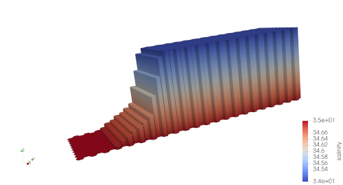

ice_shelf_2d
The ocean/ice_shelf_2d test group describes a
series of very simplified ice-shelf test cases where topography and initial
conditions only vary in the y direction. The test case currently supports
only 5-km horizontal resolution and 20 vertical levels, each 50 m thick.
The x direction is periodic and only 10 cells wide, whereas the y direction has
solid boundaries and is 44 cells long. The Coriolis parameter \(f\) is
zero. This makes the test case quasi-two-dimensional, with negligible
variability in x.
The initial temperature for the whole domain is constant (1 degree Celsius), while salinity varies linearly with depth from 34.5 PSU at the sea surface to 34.7 PSU at the sea floor, which is at a constant at 2000 m depth. The conceptual overlying ice shelf depresses the sea surface height buy as much as 1990 m (leaving a 10-m water column) for the first 30 km in y. Over the next 30 km, it rises to 1490 m, then fairly abruptly to zero over the next 15 km, where it remains for the second half of the domain. The ice shelf occupies these first 75 km of the domain: fluxes from ice-shelf melting are only applied in this region.
{kind=link}
The geometry does not represent a particularly realistic ice-shelf cavity but it is a quick and useful test of the parameterization of land-ice melt fluxes and of frazil formation below ice shelves.
Both of the ice_shelf_2d test cases are composed of 4 types of steps:
initial_state, which defines the mesh and initial conditions for the model;
ssh_adjustment, which modifies the landIcePressure field to balance
the ssh field, see Sea surface height adjustment; and forward, which
performs time integration of the model. The viz step can be used to plot
the vertical coordinate, interpolated between adjacent cell centers.
default
ocean/ice_shelf_2d/5km/default includes a relatively
strenuous, iterative process to dynamically adjust landIcePressure and
ssh to be compatible with one another in the ssh_adjustment step.
In this test case, we perform 15 iterations of adjustment, enough that changes
in pressure should be quite small compared to those in the first iteration.
Reducing this number will make the test case run more quickly at the risk of
having longer-lived transients at the beginning of the simulation.
# Options relate to adjusting the sea-surface height or land-ice pressure
# below ice shelves to they are dynamically consistent with one another
[ssh_adjustment]
# the number of iterations of ssh adjustment to perform
iterations = 15
By default, the forward step runs for 10 minutes (2 time steps). Then, if a baseline
run of the test case was provided for comparison, we perform validation of both
the prognostic variables (layer thickness, velocity, temperature and salinity)
and a large number of variables associated with freshwater and heat fluxes
under ice shelves.
Frazil-ice formation is not included in this test case.
restart_test
ocean/ice_shelf_2d/5km/restart_test performs fewer
iterations of ssh_adjustment than default, but it does include
frazil-ice formation. The model is integrated forward in time for a 2 time
steps (10 min) in the full_run step, saving a restart file every 5 minutes.
Then, a second restart_run step is performed from the restart file 5
minutes into the simulation. Prognostic variables, variables related to
sub-ice-shelf fluxes, and variables related to frazil formation are compared
between the “full” and “restart” runs at minute 10 of the simulation to
make sure they are bit-for-bit identical.
# Options relate to adjusting the sea-surface height or land-ice pressure
# below ice shelves to they are dynamically consistent with one another
[ssh_adjustment]
# the number of iterations of ssh adjustment to perform
iterations = 2